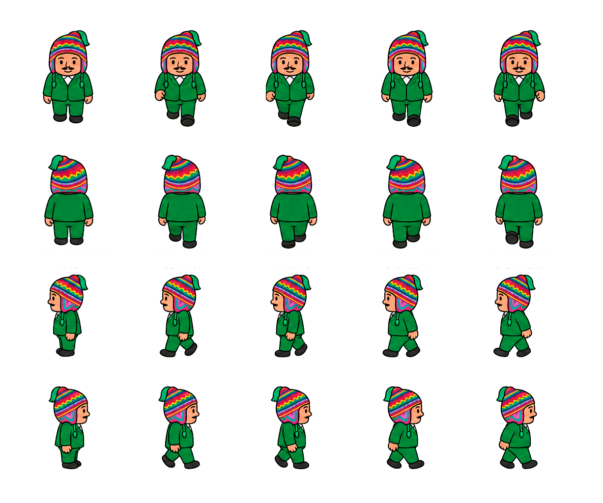

Aplicación móvil de turismo gastronómico en La Paz, inspirada en el Ukhu Pacha y la serpiente Amaru, que conecta a los turistas con lugares poco conocidos de la identidad culinaria paceña. El proyecto incluye branding, diseño y prototipado de más de 30 pantallas en Figma, un sistema de componentes basado en Atomic Design y una primera versión beta desarrollada con Angular e Ionic.
Alasitas
Videojuego desarrollado en Unity que recrea la visita del Ekeko a través de distintos minijuegos inspirados en la feria de Alasitas. El proyecto incluyó el diseño de stands, personajes y del universo visual del juego, además de la programación y el desarrollo de una landing page.


